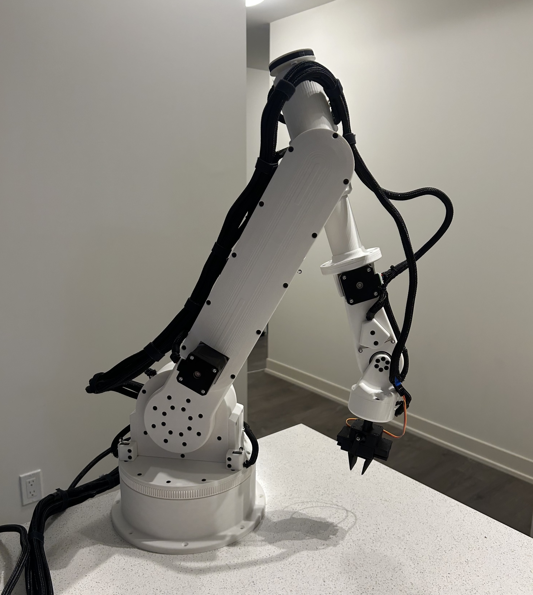
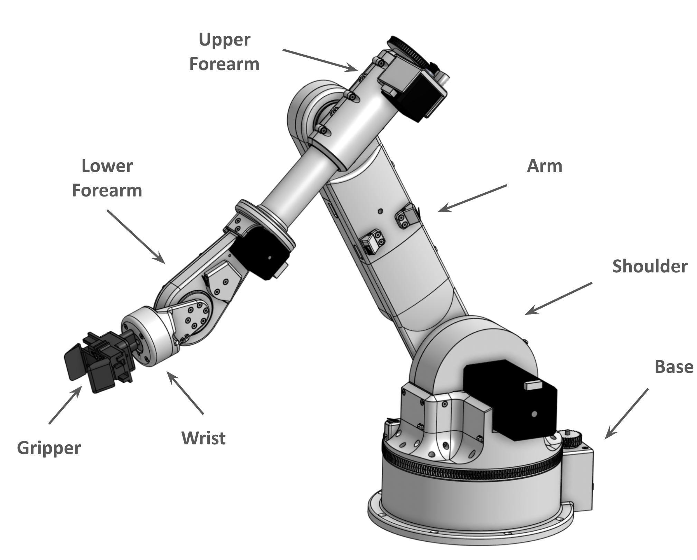
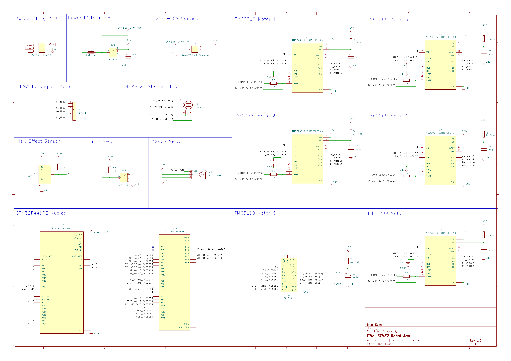
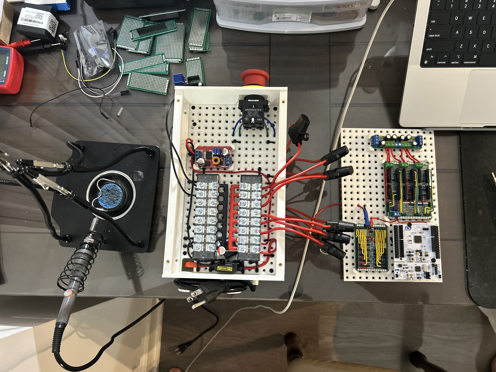

Projects
6-DOF Robotic Manipulator
July 2026 - Present
Overview
In a world where specialization is commonplace, I have always been drawn to exploring the various areas of engineering. Being exposed to many different disciplines while growing up, I have quickly realized that I enjoy working across many of them. The process of learning how each part works, as well as how they come together to create a complete system, is a something that I find very fulfilling.
My decision to major in Robotics has given me the opportunity to pursue this, exploring across everything from mechanical design and electronics, to embedded systems, control, and software. Rather than focusing each system in isolation, I have been able to develop an understanding of how they interact with one another in robotic systems.

As a challenge to push myself further, I have began this personal project to build a robotic arm from end to end. By taking ownership of the entire process, I hope to strengthen my technical skills in each area whilst gaining experience in the practical applications as well as challenges that come with bringing a system from an initial design to a working product.
Mechanical Design
The arm was designed with modularity and manufacturability as key considerations. With each arm linkage being designed in separate sub-assemblies, individual components were easily modified and replaced without rebuilding the entire arm. The mechanical components were designed in OnShape to be 3D printed and assembled using heat set inserts and standard M3 hardware.
To achieve the required torque, torque reduction mechanisms were implemented, including belt and gear reductions, as well as a 25:1 cycloidal drive for the shoulder joint. Several iterations of the 3D printed parts were required to be reprinted with adjusted tolerancing to minimize the backlash of each joint. Each linkage required different hardware, including GT2 pulleys, belt loops, dowel pins, bushings, shoulder screws, axial bearings, and thrust bearings.
The final arm has ~80cm of reach, with a modular end-effector to allow for various use cases.

Electronics
The arm uses six stepper motors controlled by an STM32 Nucleo, with five NEMA 17 motors driven by TMC2209 stepper drivers and a NEMA 23 driven by a TMC5160. The system was designed around a 36V DC switching supply with a 5V step down from a buck convertor for the control electronics and servo.
Each joint utilizes an A3144 Hall-effect sensor for homing, while limit switches are used on the shoulder, elbow, and wrist joints where the mechanical range of motion is constrained. The current prototype uses hand-wired perfboards for the motor drivers and control electronics. Electronics are protected using various fuses and an E-Stop button can be used to cut supply of power.
The next iteration will consolidate the electronics into a custom PCB, reducing wiring complexity and creating a more compact and robust control system.


Controls
The control system is currently under development. The arm is controlled by an STM32F446RE, with stepper drivers configured through step/direction signals and UART.
Current work is focused on implementing reliable joint homing and motion control. Future development will include forward and inverse kinematics, trajectory generation, and higher-level motion planning.